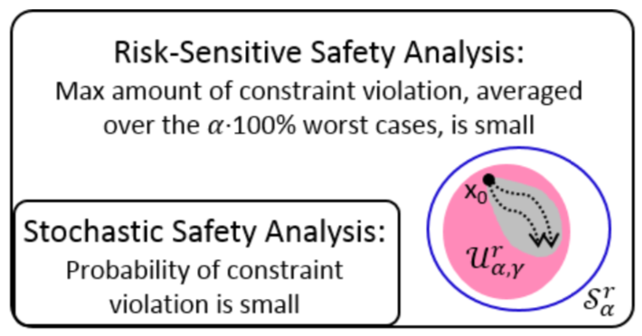
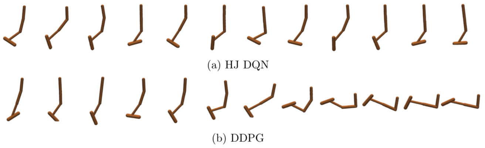

TRO21
Wasserstein distributionally robust motion control for collision avoidance using conditional value-at-risk. Astghik Hakobyan, and Insoon Yang. IEEE Transactions on Robotics, vol. 38, no. 2, pp. 939-957, 2022.
M3AS
Stochastic consensus dynamics for nonconvex optimization on the Stiefel manifold: Mean-field limit and convergence. Seung-Yeal Ha , Myeongju Kang, Dohyun Kim, Jeongho Kim, and Insoon Yang. Mathematical Models and Methods in Applied Sciences (M3AS), vol. 32, ...

[TAC] Risk-sensitive safety analysis using CVaR
The paper “ Risk-sensitive safety analysis using conditional value-at-risk ” has been accepted for publication in the IEEE Transactions on Automatic Control . Risk-sensitive safety analysis using conditional value-at-risk. by Margaret P. Chapman , Riccardo Bonalli ...
JMLR21
Hamilton-Jacobi deep Q-learning for deterministic continuous-time systems with Lipschitz continuous controls. Jeongho Kim, Jaeuk Shin, and Insoon Yang. Journal of Machine Learning Research (JMLR), vol. 22, no. 206, pp. 1-34, 2021.

[JMLR] Hamilton-Jacobi deep Q-learning
The paper “ Hamilton-Jacobi deep Q-learning for deterministic continuous-time systems with Lipschitz continuous controls ” has been accepted for publication in the Journal of Machine Learning Research (JMLR) . It aims to extend the idea of ...